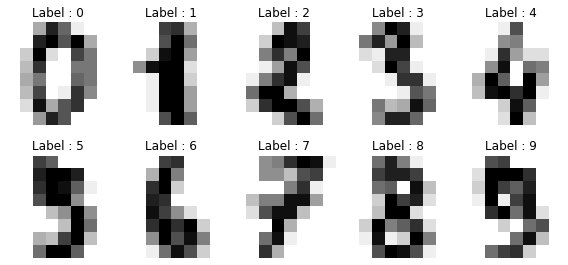
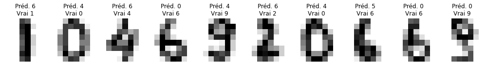
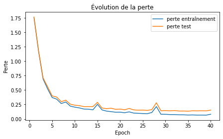
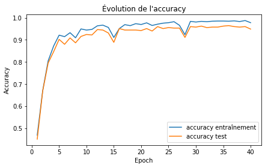
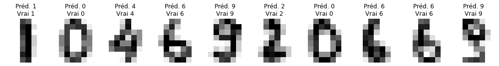
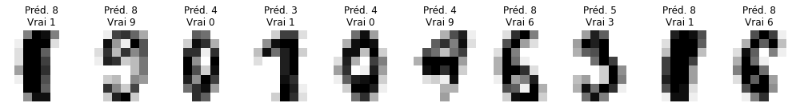

import numpy as np
import matplotlib.pyplot as plt
from sklearn.datasets import load_digits
from sklearn.model_selection import train_test_split
# Pour rendre la démonstration reproductible.
np.random.seed(42)Démonstration : réseau de neurones
Ce notebook accompagne la section sur les réseaux de neurones. Il permet de :
- charger des données numériques ;
- créer un petit réseau ;
- observer ses prédictions avant l’entraînement ;
- l’entraîner en réduisant une fonction de perte ;
- comparer les prédictions avant et après ;
- modifier quelques paramètres pour voir ce qui change.
1. Importer les bibliothèques
On utilise :
numpypour les calculs ;matplotlibpour afficher les images et les courbes ;scikit-learnpour charger un petit jeu de données et séparer entraînement/test.
Le réseau lui-même sera écrit à la main. Il existe des bibliothèques comme PyTorch.
2. Charger un petit corpus d’images
Le jeu de données digits contient des images manuscrites de chiffres de 0 à 9. Chaque image est représentée comme une ligne de 64 nombres.
digits = load_digits()
X = digits.data # Données : une ligne = une image, 64 colonnes = 64 pixels
y = digits.target # Étiquette : le chiffre attendu, de 0 à 9
print("Forme de X :", X.shape)
print("Forme de y :", y.shape)
print("Classes possibles :", np.unique(y))Forme de X : (1797, 64)
Forme de y : (1797,)
Classes possibles : [0 1 2 3 4 5 6 7 8 9]3. Quelques exemples
fig, axes = plt.subplots(2, 5, figsize=(8, 4))
for ax, image, label in zip(axes.ravel(), digits.images[:10], y[:10]):
ax.imshow(image, cmap="gray_r")
ax.set_title(f"Label : {label}")
ax.axis("off")
plt.tight_layout()
plt.show()
4. Préparer les données
On doit :
- normaliser les pixels entre 0 et 1 ;
- transformer les étiquettes en vecteurs
one-hot; - séparer les données en entraînement et test.
Un label 3 devient par exemple :
[0, 0, 0, 1, 0, 0, 0, 0, 0, 0]# Les pixels vont de 0 à 16. On les ramène entre 0 et 1.
X = X / 16.0
# Encodage one-hot des classes.
num_classes = len(np.unique(y))
y_onehot = np.eye(num_classes)[y]
X_train, X_test, y_train, y_test, labels_train, labels_test = train_test_split(
X,
y_onehot,
y,
test_size=0.25,
random_state=42,
stratify=y
)
print("Entraînement :", X_train.shape)
print("Test :", X_test.shape)
print("Exemple d'étiquette one-hot :", y_onehot[0])Entraînement : (1347, 64)
Test : (450, 64)
Exemple d'étiquette one-hot : [1. 0. 0. 0. 0. 0. 0. 0. 0. 0.]5. Définir un petit réseau
Notre réseau a une architecture très simple :
64 pixels → couche cachée → 10 probabilitésLa sortie contient une probabilité pour chaque chiffre possible.
À retenir :
- les poids indiquent quels signaux comptent davantage ;
- les biais décalent les calculs ;
- ReLU coupe les valeurs négatives ;
- softmax transforme la sortie en probabilités ;
- la perte mesure l’erreur ;
- l’entraînement ajuste les poids pour réduire cette erreur.
class NeuralNet:
def __init__(self, input_size, hidden_size, output_size, seed=42):
rng = np.random.default_rng(seed)
# Initialisation des poids.
# Ici on utilise une initialisation adaptée à ReLU.
self.W1 = rng.normal(0, np.sqrt(2 / input_size), size=(input_size, hidden_size))
self.b1 = np.zeros((1, hidden_size))
self.W2 = rng.normal(0, np.sqrt(2 / hidden_size), size=(hidden_size, output_size))
self.b2 = np.zeros((1, output_size))
def relu(self, z):
"""ReLU(x) = max(0, x)."""
return np.maximum(0, z)
def relu_derivative(self, z):
"""Dérivée de ReLU : 1 si z > 0, sinon 0."""
return (z > 0).astype(float)
def softmax(self, z):
"""Transforme les scores en probabilités."""
shifted = z - np.max(z, axis=1, keepdims=True)
exp_z = np.exp(shifted)
return exp_z / np.sum(exp_z, axis=1, keepdims=True)
def forward(self, X):
"""Propagation avant : entrée → couche cachée → sortie."""
self.z1 = X @ self.W1 + self.b1
self.a1 = self.relu(self.z1)
self.z2 = self.a1 @ self.W2 + self.b2
self.a2 = self.softmax(self.z2)
return self.a2
def compute_loss(self, y_true, y_pred):
"""Entropie croisée : mesure l'écart entre prédiction et réponse attendue."""
eps = 1e-12
return -np.mean(np.sum(y_true * np.log(y_pred + eps), axis=1))
def backward(self, X, y_true, learning_rate):
"""Rétropropagation : ajuste les poids pour réduire la perte."""
m = X.shape[0]
# Erreur à la sortie.
dz2 = self.a2 - y_true
dW2 = self.a1.T @ dz2 / m
db2 = np.sum(dz2, axis=0, keepdims=True) / m
# Erreur dans la couche cachée.
dz1 = (dz2 @ self.W2.T) * self.relu_derivative(self.z1)
dW1 = X.T @ dz1 / m
db1 = np.sum(dz1, axis=0, keepdims=True) / m
# Mise à jour des paramètres.
self.W2 -= learning_rate * dW2
self.b2 -= learning_rate * db2
self.W1 -= learning_rate * dW1
self.b1 -= learning_rate * db1
def predict(self, X):
"""Retourne la classe la plus probable."""
probabilities = self.forward(X)
return np.argmax(probabilities, axis=1)
def accuracy(self, X, y_true):
"""Calcule la proportion de bonnes réponses."""
predictions = self.predict(X)
expected = np.argmax(y_true, axis=1)
return np.mean(predictions == expected)
def train(self, X, y, X_val, y_val, epochs=40, batch_size=32, learning_rate=0.1):
"""Entraîne le réseau et conserve l'historique."""
history = {
"train_loss": [],
"val_loss": [],
"train_acc": [],
"val_acc": [],
}
for epoch in range(epochs):
# Mélanger les données à chaque epoch.
permutation = np.random.permutation(X.shape[0])
X_shuffled = X[permutation]
y_shuffled = y[permutation]
# Entraînement par mini-lots.
for start in range(0, X.shape[0], batch_size):
X_batch = X_shuffled[start:start + batch_size]
y_batch = y_shuffled[start:start + batch_size]
self.forward(X_batch)
self.backward(X_batch, y_batch, learning_rate)
# Mesures à la fin de chaque epoch.
train_pred = self.forward(X)
val_pred = self.forward(X_val)
train_loss = self.compute_loss(y, train_pred)
val_loss = self.compute_loss(y_val, val_pred)
train_acc = self.accuracy(X, y)
val_acc = self.accuracy(X_val, y_val)
history["train_loss"].append(train_loss)
history["val_loss"].append(val_loss)
history["train_acc"].append(train_acc)
history["val_acc"].append(val_acc)
if epoch == 0 or (epoch + 1) % 10 == 0 or epoch == epochs - 1:
print(
f"Epoch {epoch + 1:02d}/{epochs} | "
f"perte train={train_loss:.3f} | "
f"perte test={val_loss:.3f} | "
f"accuracy test={val_acc:.1%}"
)
return history6. Créer le modèle
On crée maintenant un réseau avec :
- 64 entrées, une par pixel ;
- une couche cachée de 32 neurones ;
- 10 sorties, une par chiffre possible.
À ce stade, les poids sont presque aléatoires. Le réseau n’a encore rien appris.
net = NeuralNet(input_size=64, hidden_size=32, output_size=10)
print("W1 :", net.W1.shape)
print("b1 :", net.b1.shape)
print("W2 :", net.W2.shape)
print("b2 :", net.b2.shape)
print("Accuracy avant entraînement :", f"{net.accuracy(X_test, y_test):.1%}")W1 : (64, 32)
b1 : (1, 32)
W2 : (32, 10)
b2 : (1, 10)
Accuracy avant entraînement : 1.1%7. Voir les prédictions avant l’entraînement
Avant l’entraînement, le modèle répond presque au hasard.
C’est normal : ses poids n’ont pas encore été ajustés.
def show_predictions(model, X, y_labels, count=10, seed=0):
rng = np.random.default_rng(seed)
indices = rng.choice(X.shape[0], count, replace=False)
X_sample = X[indices]
true_labels = y_labels[indices]
predicted_labels = model.predict(X_sample)
fig, axes = plt.subplots(1, count, figsize=(1.4 * count, 2.2))
if count == 1:
axes = [axes]
for ax, image, true, pred in zip(axes, X_sample, true_labels, predicted_labels):
ax.imshow(image.reshape(8, 8), cmap="gray_r")
ax.set_title(f"Préd. {pred}\nVrai {true}")
ax.axis("off")
plt.tight_layout()
plt.show()
show_predictions(net, X_test, labels_test, count=10, seed=1)
8. Entraîner le réseau
Le cycle d’entraînement est toujours le même :
- le modèle prédit ;
- on mesure l’erreur ;
- on ajuste les poids ;
- on recommence.
Pendant la démonstration, on peut modifier learning_rate, hidden_size ou epochs pour voir ce qui change.
hidden_size = 32
learning_rate = 0.1
epochs = 40
batch_size = 32
net = NeuralNet(input_size=64, hidden_size=hidden_size, output_size=10, seed=42)
history = net.train(
X_train,
y_train,
X_test,
y_test,
epochs=epochs,
batch_size=batch_size,
learning_rate=learning_rate,
)
print()
print("Accuracy finale sur le test :", f"{net.accuracy(X_test, y_test):.1%}")Epoch 01/40 | perte train=1.755 | perte test=1.767 | accuracy test=45.1%
Epoch 10/40 | perte train=0.204 | perte test=0.238 | accuracy test=92.4%
Epoch 20/40 | perte train=0.117 | perte test=0.170 | accuracy test=94.2%
Epoch 30/40 | perte train=0.079 | perte test=0.145 | accuracy test=95.8%
Epoch 40/40 | perte train=0.081 | perte test=0.153 | accuracy test=94.9%
Accuracy finale sur le test : 94.9%
Epoch 20/40 | perte train=0.117 | perte test=0.170 | accuracy test=94.2%
Epoch 30/40 | perte train=0.079 | perte test=0.145 | accuracy test=95.8%
Epoch 40/40 | perte train=0.081 | perte test=0.153 | accuracy test=94.9%
Accuracy finale sur le test : 94.9%9. Observer la perte et l’accuracy
Si l’entraînement fonctionne, la perte devrait globalement descendre.
L’accuracy devrait, elle, globalement monter.
epochs_range = np.arange(1, len(history["train_loss"]) + 1)
plt.figure(figsize=(7, 4))
plt.plot(epochs_range, history["train_loss"], label="perte entraînement")
plt.plot(epochs_range, history["val_loss"], label="perte test")
plt.xlabel("Epoch")
plt.ylabel("Perte")
plt.title("Évolution de la perte")
plt.legend()
plt.show()
plt.figure(figsize=(7, 4))
plt.plot(epochs_range, history["train_acc"], label="accuracy entraînement")
plt.plot(epochs_range, history["val_acc"], label="accuracy test")
plt.xlabel("Epoch")
plt.ylabel("Accuracy")
plt.title("Évolution de l'accuracy")
plt.legend()
plt.show()

10. Voir les prédictions après l’entraînement
On regarde maintenant les mêmes exemples.
show_predictions(net, X_test, labels_test, count=10, seed=1)
11. Regarder les erreurs
Les erreurs sont souvent plus intéressantes que les bonnes réponses.
Elles permettent de voir quand deux chiffres se ressemblent, ou quand l’image est ambiguë.
predictions = net.predict(X_test)
mistakes = np.where(predictions != labels_test)[0]
print("Nombre d'erreurs :", len(mistakes), "sur", len(labels_test))
if len(mistakes) > 0:
count = min(10, len(mistakes))
selected = mistakes[:count]
fig, axes = plt.subplots(1, count, figsize=(1.4 * count, 2.2))
if count == 1:
axes = [axes]
for ax, index in zip(axes, selected):
ax.imshow(X_test[index].reshape(8, 8), cmap="gray_r")
ax.set_title(f"Préd. {predictions[index]}\nVrai {labels_test[index]}")
ax.axis("off")
plt.tight_layout()
plt.show()Nombre d'erreurs : 23 sur 450
12. À tester pendant la démonstration
On peut maintenant modifier un paramètre et relancer l’entraînement.
Quelques idées :
- réduire
epochspour voir un modèle sous-entraîné ; - augmenter ou diminuer
learning_rate; - changer
hidden_size; - observer si la perte descend plus vite, plus lentement ou devient instable.
# Essayez de modifier ces valeurs.
demo_hidden_size = 16
demo_learning_rate = 0.02
demo_epochs = 15
demo_batch_size = 32
demo_net = NeuralNet(input_size=64, hidden_size=demo_hidden_size, output_size=10, seed=123)
demo_history = demo_net.train(
X_train,
y_train,
X_test,
y_test,
epochs=demo_epochs,
batch_size=demo_batch_size,
learning_rate=demo_learning_rate,
)
print()
print("Accuracy avec ces paramètres :", f"{demo_net.accuracy(X_test, y_test):.1%}")Epoch 01/15 | perte train=2.115 | perte test=2.115 | accuracy test=20.9%
Epoch 10/15 | perte train=1.061 | perte test=1.069 | accuracy test=80.0%
Epoch 15/15 | perte train=0.707 | perte test=0.715 | accuracy test=85.3%
Accuracy avec ces paramètres : 85.3%